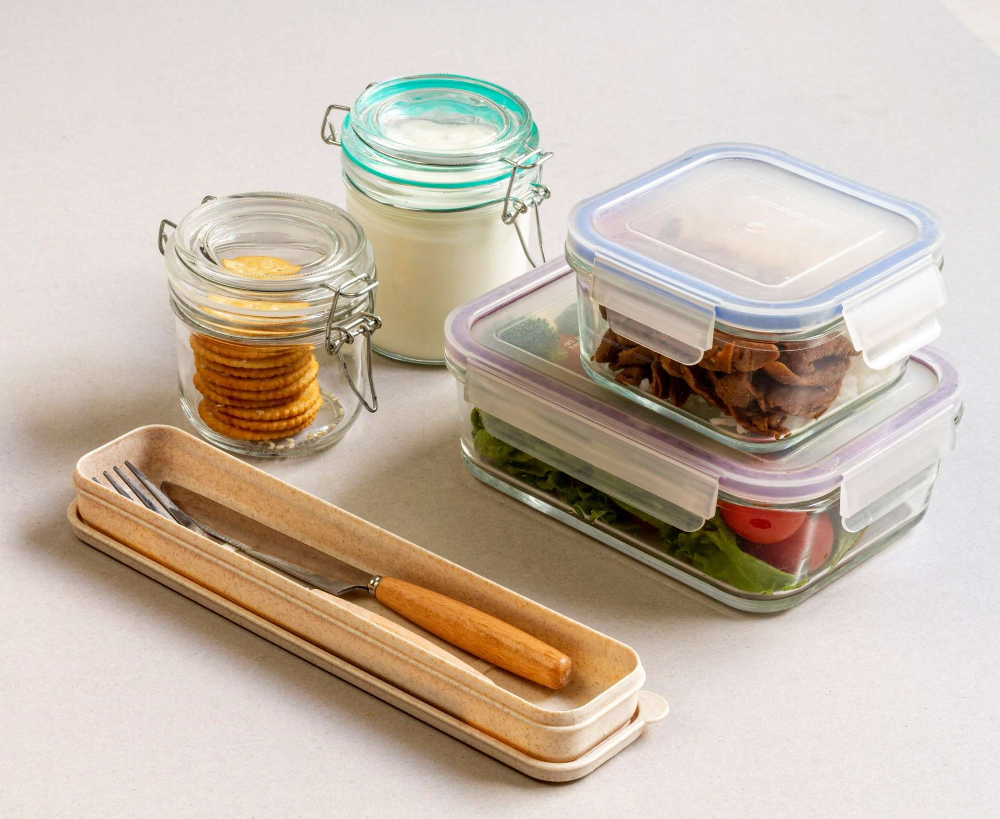
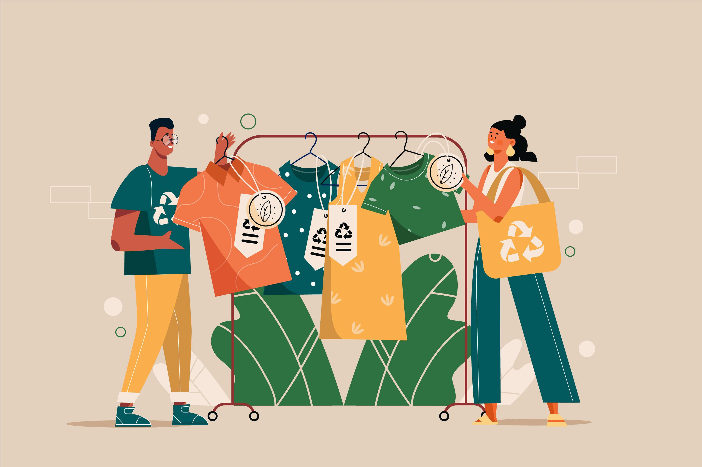
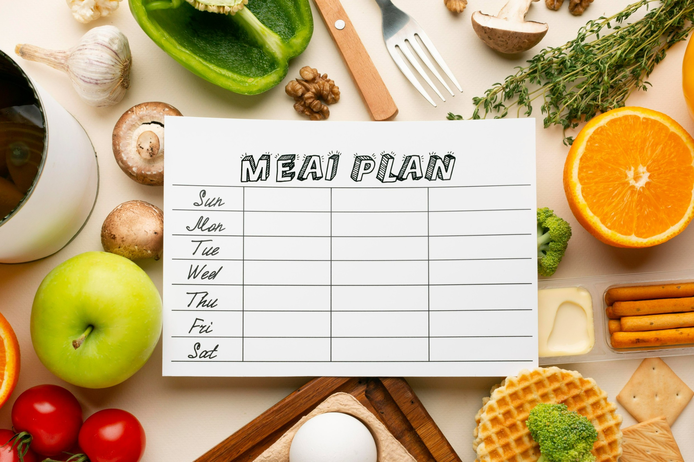
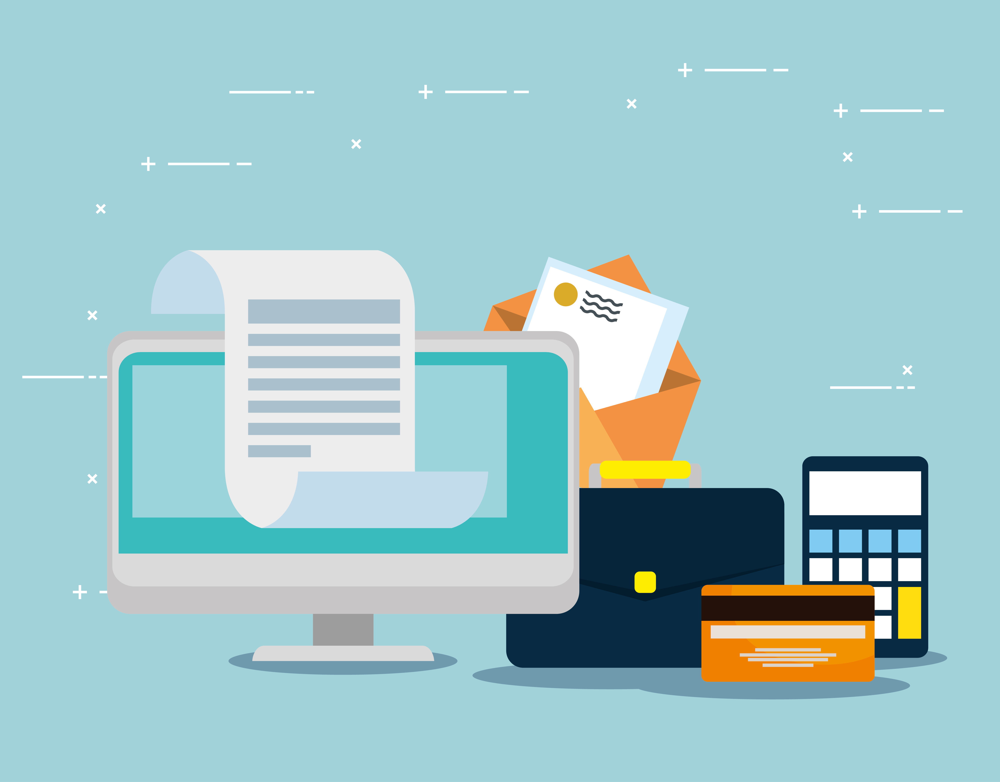

My Zero Waste Goals

Reducing Single-use Items by Switching to Reusables
Instead of using plastic straws, bags and packaging, use reusable containers, straws and bags, reducing pollution nad plastic waste in landfills and oceans..
Challenges
I may forget to bring my own reusables along when leaving the house or may find it too bulky to bring around and end up using single-use items instead.
How I will overcome it
I will keep my reusable containers, straws, and bags in my bag so they are always with me. Choosing lightweight and foldable items will make it easier to carry them around daily.

Buy Secondhand and Durable Items
Buy secondhand or durable items instead of new disposable products to reduce waste and lower demand for its manufacturing.
Challenges
Sometimes, I may feel unsure about the quality or hygiene of secondhand items, and it can be difficult to find what I need.
How I will overcome it
Research for trusted thrift stores and online platforms, carefully inspect the items before purchasing it, and clean them thoroughly to ensure they are safe for usage.

Reduce Food Waste by Planning Meals
I will plan my meals carefully by buying only what I need, reducing leftover food waste and saving money.
Challenges
It can be hard to estimate how much food to buy especially with changing schedules or unexpected guests. Overbuying can lead to spoilage while underbuying can cause frequent trips to the store.
How I will overcome it
I will use a meal planner or shopping list to organize purchases, store food correctly to extend freshness, and get creative by repurposing leftovers into new meals.

Use Digital Documents and Receipts
I will switch from using paper to digital documents, receipts and notes when possible to reduce waste and save trees.
Challenges
Some places still require paper receipts and it can be hard to remember or organize digital files.
How I will overcome it
I will use apps that can store digital receipts automatically, ask for email receipts, and opt for non-paper statements like bank bills whenever possible.